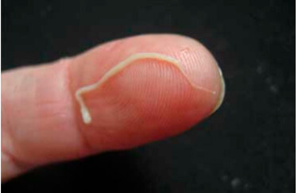
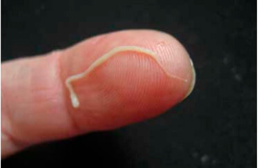

Брадавиците са резултат от наличието на паразити в тялото ви!
Според статистиката повече от милиард души страдат от паразитни инфекции. Най-точният начин за диагностициране на тази инфекция е да имате брадавици.
Днес на нашите въпроси отговаря доц. Ангел Кунчев.
Доктор по медицински науки, катедра по паразитология,
доктор по естетична медицина. Той ръководи програмата "Необичайни медицински
случаи" по TVN Style и е автор на две книги за естетичната медицина.
Институтът по медицинска паразитология и хелминтология е
открил истинската причина за появата на брадавици по човешкото тяло: инфекция с
паразити. Последните проучвания показват, че отпадните продукти от паразити са
токсични и създават идеална среда за развитието на бактерии.
Днес ще обсъдим този медицински проблем с доц. Кунчев
Кореспондент: Ангел Кунчев ,добър ден! Ще започна с
основния въпрос: вярно ли е, че по-голямата част от населението на България е
заразена с паразити?
Доц. Кунчев За съжаление да. Ние заемаме едно от
първите места по отношение на паразитната инфекция. Това се дължи на много лошите
условия на околната среда, липсата на действия от страна на властите и
безразличието на хората.
Милиони хора умират всяка година поради заболявания,
причинени от паразити. В същото време, ако прегледате свидетелствата за смърт,
никъде не пише, че човек е умрял от инфекция с паразити. Изключения са много
малко и като правило говорим за ситуации, при които е невъзможно да се игнорира
инфекцията, например когато сърцето е било запушено с паразити. За местните
медицински власти е напълно неизгодно да признаят, че нивото на такава инфекция е
доста високо и че 89% от всички смъртни случаи са причинени от паразити. Освен
това всички тези заболявания карат хората да ходят в клиники за скъпи лекарства.
Това е огромен пазар. Надявам се да разберете какво точно имам предвид.
И напомням, че около 89% от всички смъртни случаи,
включително от така наречените природни причини, са причинени само от един фактор
- паразити, които бавно ни поглъщат отвътре.
Всъщност мисленето, че паразитите са просто червеи, е
грешка. Има огромен брой видове паразити, които могат да живеят в различни органи
и да причинят голямо разнообразие от последствия. В допълнение, червеите или,
както ги наричат по друг начин, хелминти, са доста опасни. Те буквално
унищожават червата, което води до гниене, а след това до смърт. Между другото,
червеите са трудни за откриване и също толкова трудно да се отървете.
Освен хелминти, има хиляди паразити, които могат да живеят
в черния дроб, мозъка, белите дробове, кръвта и стомаха. И почти всички те са
смъртоносни. Някои от тях веднага започват агресивно да унищожават човешкото
тяло. Други паразити живеят тайно до момента, когато техният брой стане толкова
голям, че тялото не е в състояние да се справи с тях и човекът умира. Те
провокират редица фатални усложнения: инфаркт, рак, цироза, нефрит, гниещи
бъбреци.
В същото време мога да кажа с увереност, че почти всички
хора са заразени с паразити. Проблемът е, че повечето инфекции с паразити са
много трудни за откриване. И когато последиците от инфекция с паразити станат
очевидни, лекарите се опитват да се отърват от тях. Дори по време на аутопсия е
необходим специален тест за откриване на паразити. Поне в повечето случаи.
Единственият универсален симптом, който може точно да
диагностицира наличието на паразити в човешкото тяло, са брадавици.
Кореспондент: Можете ли да дадете някои конкретни
примери за инфекция с паразити?
Доц. Кунчев Мога да ви дам хиляда случая. Но може
би ще се съсредоточа върху тези, които най-добре показват опасността от
заразяване с паразити.
1. Случаят с успешен изход. Пациентът се оплаква от
коремна болка от време на време. Те буквално изкопаха лабиринт там, започна
процесът на дегенерация на тъканите и пациентът беше на прага на сепсиса. По
време на операцията се отстранява част от червата, червеите се отстраняват заедно
с гниещи тъкани. След седмица на интензивна грижа пациентът се почувства много
по-добре.
2. Матката, заразена с колония от паразити. За съжаление,
вече беше невъзможно да се отърве от тях, защото паразитите и техните ларви
напълно запълниха матката на тази пациентка и няколко пъти увеличиха нейния
размер. Затова трябваше да бъде премахната. Жената беше спасена. Интоксикацията
на тялото обаче била толкова силна, че след отстраняване на матката трябвало да
се подложи на специално лечение и за съжаление тя починала след 3 години.
Ехинококоза на сърцето. Заболяването е открито твърде
късно. Лекуващият лекар смяташе, че този пациент просто страда от коронарна
болест на сърцето и стенокардия, но реалността се оказа по-жестока. Операцията не
помогна, консервативното лечение също. Сърдечната трансплантация също не даде
резултат - не се вкорени. В резултат на това пациентът умря, без да възвърне
съзнанието си.
Кореспондент: Как можем да проверим дали сме заразени
с паразити?
Доц. Кунчев За съжаление, няма методи, които могат
уверено да диагностицират дали има паразити в човешкото тяло или не. Отчасти това
се дължи на факта, че има много видове паразити, повече от 2000 известни вида, и
отчасти защото са трудни за откриване. Пълен преглед за тяхното присъствие може
да се извърши само в няколко клиники в България, но той е много скъп.
Основните симптоми, които показват наличието на
паразити в организма, са:
- - лош дъх;
- - алергии (обрив, сълзене на очите и хрема);
- - обрив и зачервяване на кожата;
- - чести настинки;
- - хронична умора;
- - чести главоболия;
- - запек или диария;
- - мускулни и ставни болки;
- - нервност, безсъние и нарушения на апетита;
- - тъмни кръгове и торбички под очите.
Ако има поне един от тези симптоми, тогава вероятността
тялото ви да има паразити е 99%. И трябва да се отървете от тях възможно
най-скоро!
Кореспондент: Как можем да се защитим и да се отървем
от паразитите?
По отношение на наличието на лекарства за борба с
паразитите, настоящата ситуация е доста проблематична. Разбира се, има високо
специализирани лекарства, които прочистват организма от глисти. Съществуват и
повече или по-малко ефективни лекарства за борба с определени видове глисти или
паразити, които атакуват черния дроб. Основният проблем обаче е, че те
взаимодействат само с определен тип паразити и всеки човек е носител на поне 7-8
вида паразити.
Днес има само едно решение, което ви позволява напълно да
се отървете от паразитите. Това е антипаразитна добавка, наречена
. Клиничните изпитвания са показали отлични резултати.
Износът на този продукт е спрян, докато не бъде разпространен в цяла България.
Кореспондент: Какво прави
толкова специален? Каква е разликата между това
лекарство и други антипаразитни лекарства?
Доц. Кунчев В сравнение с други антипаразитни
препарати, той действа директно върху широк спектър от паразити, които могат да
заразят цялото тяло. Предвид проблемите с диагнозата, заслужава да се отбележи,
че това средство ви позволява ефективно да почистите цялото тяло. По-рано
споменах, че е почти невъзможно да се определи какъв вид паразит е заразил
тялото. А унищожава и премахва всички
паразити, живеещи във всеки вътрешен орган - от мозъка и сърцето до черния
дроб и червата. В момента никой друг препарат не е способно на това.
В допълнение, това не е химическо средство, а напълно
натурален продукт, който елиминира риска от алергични реакции, нарушения на
бактериалната флора в червата и други проблеми, които могат да възникнат при
използване на класически таблетки. Ето защо той е толкова търсен от
международните аптечни вериги и фармацевтичните компании.
ВАЖНО! Производителят стартира специална
промоция, в рамките на която това средство може да бъде закупено с 50% отстъпка!
Оригиналният може да бъде поръчан на ОФИЦИАЛЕН САЙТ С 50% ОТСТЪПКА
Оригиналният може да бъде поръчан на ОФИЦИАЛЕН САЙТ С 50% ОТСТЪПКА
1. Ефективността на е
изчислена с помощта на стандартни техники. Съотношението на напълно
възстановените хора към общия брой хора в група от 100 души, които са приемали
това средство:
2. Не са открити странични ефекти, включително
алергични реакции.
Средството е сертифицирано не само в България, но и в
Парижкия университет. Клиничните изпитвания потвърдиха напълно данните, получени
в България. Французите получиха още по-висок процент излекувани пациенти.
Вече приключи поредица от клинични изпитвания в Китай,
Япония и Виетнам. Азиатските страни проявяват голям интерес към този препарат.
Всички тестове без изключение показаха невероятната ефективност на този продукт.
Доц. Кунчев Това е ограничена оферта. А самият
продукт се предлага само в определени региони на страната. Както бе споменато
по-горе, в момента се предлага с 50% отстъпка.
Всичко, което трябва да направите, за да закупите е да оставите заявка на уебсайта, да посочите
вашето име и телефонен номер, чрез които операторът може да се свърже с вас. Ако
все още видите, че е възможно да изпратите заявка за обратна връзка, това
означава, че средството все още е наличен на склад. Аз лично гарантирам, че
всеки, който изпрати заявка в сайта, ще получи своята поръчка.
Кореспондент: Ангел Кунчев , искаш ли да кажеш нещо
друго на нашите читатели, преди да завършим това интервю?
Доц. Кунчев Единственото, което бих искал да кажа,
е да се грижите за здравето си. Може дори да не подозирате, че паразитите живеят
вътре във вас. Те могат да бъдат навсякъде - в кръвта, червата, белите дробове,
сърцето, мозъка. Паразитите буквално ви поглъщат отвътре, отравяйки тялото ви. В
резултат на това възникват много проблеми, които съкращават продължителността на
живота с 15-25 години. Дори няма да спомена внезапната смърт, която настъпва
обикновено в резултат на действията на паразитите в организма. Не чакайте, докато
не стане твърде късно. Почистете тялото си в момента.
Важно! Доказано е, че сега е най-доброто време да
започнете лечение. Ефектът на препарата се засилва. Подобряването на здравето
се случва с 47% по-бързо, отколкото в други моменти през годината.

Вече опитах този продукт. Пет дни по-късно видях, че те
стават все по-малко.Стомахът ми започна да работи по-добре.

Поръчах и за себе си.
Куриерът достави на следващия ден. Имах много брадавици близо до гърдите си.
Започнах да приемам S и нямате идея какво
излезе от мен. Никога не съм мислила, че толкова много същества могат да
живеят в червата ми. Не искам да си спомням това вече.

Представете си, намерих червеи в детска саксия. Бях
ужасена. Моята приятелка наскоро също имаше такъв проблем и тя ме посъветва . Веднага поръчах на официалния уебсайт .
Много мъртви червеи излязоха от детето ми! След курса отидохме при лекаря и
той потвърди, че са чревни червеи. върши
чудеса. Толкова хубаво, че синът ми дори не знаеше, че има такъв проблем. Това
видях в гърнето на сина ми.



Много благодаря! Когато започнах да приемам
, нямах представа, че мога да постигна такъв ефект.
Коремната болка вече е отминала. Струваше ми се, че нещо живее в мен. И сега,
на 53, се чувствам по-здрав, отколкото на 30. Благодаря, че разказахте на
хората по този проблем. Семейният лекар няма да ви каже такава важна
информация със сигурност.
Пейо благодаря за положителните отзиви. С най-добри
пожелания, Ангел Кунчев


Наскоро гледах документален филм за паразитите. И този
препарат се споменава там. Казаха, че това е най-доброто антипаразитарно
средство в света.

Току-що направих поръчка. Пратката трябва да пристигне до
седмица. Не мога да чакам!

Имах кошмарни мигрени. Приемах
няколко седмици и проблемите ми изчезнаха. Сега не
мога да спра да мисля за това, какво живееше там?

Баба ми ме научи как да се отърва от паразитите с
пелин. Но ... това не помага. Поръчах и
вече нямам проблеми с брадавици! Спряхме да пием пелин и преминахме към
. Ефектът е един и същ, цената е много
достъпна и се приема много по-лесно. И сега също с отстъпка.
Много интересно интервю, благодаря! Отваряш очите
на хората!

Но какво става, ако това е измама? Защо се
продава само в Интернет?


Марияна,чела ли си тази статия? За каква
измама можем да говорим, ако бъде плащане при получаване?
Поръчаш,куриера доставя. Сега всичко се продава в Интернет, от
дрехи и обувки до различни домакински уреди и мебели.
Коментари